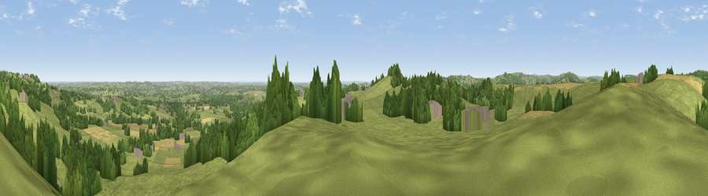

Viewpoint near Crich
#12372 in England · top 7% of its area beats it · near CrichThe view, rendered

A 360° render of this exact spot computed from the terrain model, tree cover and land cover — summer colours, afternoon light, calibrated against photographs of famous viewpoints. Real trees, hedges and buildings will differ in detail.
The panorama
Grey silhouette: terrain skyline in each direction (720 bearings, Earth curvature and refraction included). Dashed green: skyline with trees (+15 m) and buildings (+8 m) as obstacles. Blue strip: how far the ground is visible on each bearing.
Where the view opens
Wedge length = distance to the farthest visible ground on that bearing (vegetation-aware). Rings at 10, 25 and 50 km.
What fills the view
75% grassland · 17% woodland · 6% cropland · 2% built-up
Angular shares of the visible panorama (visual magnitude), not map area. Landscape diversity 0.34 (0–1 Shannon).
Key numbers
More beautiful places nearby
The staircase of upgrades: each row has a higher view potential than everything closer. Driving times are estimates from straight-line distance, calibrated against real road routing — check an actual route before setting out.
| Place | Direction | Drive | Score |
|---|---|---|---|
| Viewpoint near Holloway | NNW · 1 km | ~2 min | 60.8 |
| Crich Stand | SSW · 1 km | ~4 min | 73.0 |
| Alport Height | SW · 7 km | ~14 min | 73.9 |
| Tissington Hill | W · 20 km | ~34 min | 75.5 |
| Viewpoint near Woodhouse Eaves | SSE · 45 km | ~65 min | 77.7 |
| Viewpoint near Mow Cop | W · 49 km | ~70 min | 78.9 |
| Viewpoint near Mow Cop | W · 49 km | ~70 min | 80.2 |
| Viewpoint near Harthill | W · 84 km | ~108 min | 80.5 |
53.10524, -1.48128 · source: screening · position refined by local search. Computed location — check access rights before visiting.